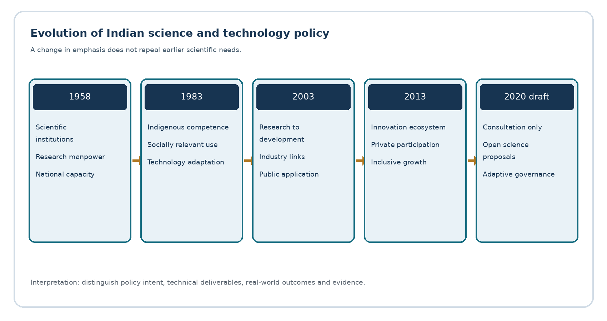
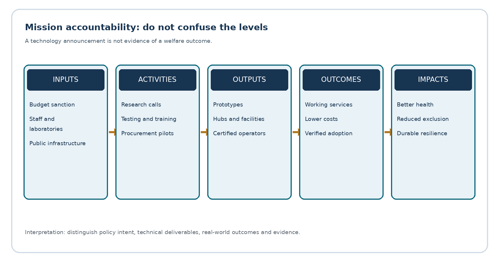
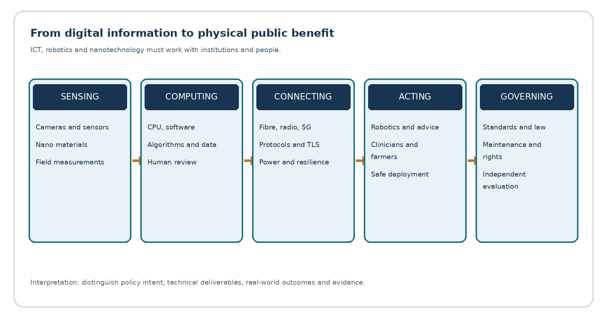

Full printable PDF · Editable source
TGPSC Group I | Paper V — Science & Technology and Data Interpretation | Unit I — Role and Impact of Science and Technology | Topic 2 | English | Published learning draft — NOT academically approved
The commission-hosted Notification No. 02/2024, Annexure II, Paper V, Section I, Item 2 reads: “National Policy of Science & Technology: changes in Policy from time to time: Technology missions - ICT: Basics in Computers, Robotics, Nano technology and Communication.” The wording was corroborated in the search-indexed original commission PDF on 24 October 2026. The PDF host returned HTTP 403 when directly reopened in this run; the source-audit record distinguishes this access limitation from successful indexed-text authentication. [S01]
| Official component | Detailed coverage | Examination demand |
|---|---|---|
| National S&T policy and changes | Sections 1–5 | Compare objectives, institutions, instruments and changing historical constraints. |
| Technology missions | Sections 6–8 | Explain mission design, funding, technology translation and outcome measurement. |
| ICT and computer basics | Sections 9–11 | Distinguish hardware, software, data, networking and security; apply concepts. |
| Robotics | Sections 12–13 | Explain sensing, control, autonomy, applications and safeguards. |
| Nanotechnology | Sections 14–15 | Explain nanoscale properties, fabrication, applications, toxicology and governance. |
| Communication | Sections 10–11 and 16 | Trace information transmission, digital networks, spectrum and inclusion. |
The chapter treats the listed syllabus terms as connected but distinct: a national policy sets priorities; a mission coordinates actors around measurable objectives; a computer processes information; a robot acts on the physical world; nanotechnology changes material behaviour at small dimensions; and communication transports information across space. A mains answer should connect them through governance without confusing their underlying principles.
A science policy decides how public institutions generate, verify, share and apply knowledge. A technology policy addresses the development, selection, adaptation, production and diffusion of usable techniques. An innovation policy considers the institutional process through which an idea becomes a beneficial product, service, organisational practice or public solution. They overlap but are not synonyms. A paper may be scientifically original yet have no user; a useful frugal device may be technologically modest yet socially innovative. Public policy must support both the long research horizon and the last-mile delivery system.
Knowledge has characteristics of a public good: one person learning a scientific principle does not prevent another from using it, and excluding non-payers is often costly. Private firms can underinvest in basic research because they cannot capture every social benefit. Conversely, governments can overfund prestige facilities disconnected from users. This is why the state funds universities, laboratories and public research, but also uses competitive grants, procurement, standards, tax incentives, technology-transfer arrangements and independent evaluation. The problem is not simply how much money is spent. It is whether institutions convert inputs into reproducible knowledge, capable people, safe products and equitable services.
India's scientific institutions operate within constitutional and federal responsibilities. Article 51A(h) identifies the development of scientific temper, humanism and the spirit of inquiry and reform as a fundamental duty. It does not itself create an enforceable right to a research grant. Article 21-related protections, privacy jurisprudence, equality and environmental duties shape technology deployment. The Union funds national research missions and regulates sectors such as telecommunications; states implement education, health, local services, land and industrial ecosystems. A Telangana district hospital adopting telemedicine therefore depends simultaneously on national digital standards, state procurement, reliable connectivity, medical personnel and patient consent.
A policy should answer five questions. What problem? For example, diagnostic delay rather than merely low AI adoption. Whose problem? Remote patients, not only software vendors. Which instrument? A clinical validation programme and procurement protocol, not only a hackathon. How will success be measured? Diagnostic turnaround, error rates and equitable coverage, not just downloads. What are the safeguards? Data protection, human appeal, cybersecurity and post-deployment monitoring. This causal sequence separates development-oriented science policy from technology publicity.
The Government of India's Scientific Policy Resolution of 4 March 1958 was a foundational post-independence statement. It linked prosperity with science, technology, raw materials and capital; recognised the strategic importance of trained scientific personnel; and called for a climate in which research could flourish. It belonged to an era of planned industrialisation, import constraints and institution-building. Scientific capacity was expected to reduce technological dependence and help address agriculture, health, defence and industrial production. The Resolution should be read as an aspirational policy instrument, not as a guarantee that every stated objective was achieved. [S02]
The policy's institutional logic matters. Scientific laboratories need continuity across political cycles because equipment, training and cumulative expertise require years. National institutions such as CSIR laboratories, IITs, atomic-energy establishments, space research centres and agricultural research networks evolved through overlapping initiatives rather than from a single 1958 act. Their different mandates illustrate why a policy can coordinate scientific capacity without treating all research as one administrative category. Agricultural extension is different from fundamental particle physics, yet both depend on credible evidence and skilled people.
The strengths of this phase were creation of a national research identity, training pathways and strategic capabilities. Its limitations included the possibility of separating publicly funded research from rural needs, industrial users and state-level institutions. A country may produce highly qualified scientists while failing to supply technicians, quality testing, reliable maintenance or locally appropriate designs. The exam-relevant distinction is between scientific infrastructure (institutions, laboratories, people) and technology absorption (firms, farmers, hospitals and administrations able to use the knowledge). The former is necessary but not sufficient for the latter.
The Technology Policy Statement of January 1983 made technological self-reliance, efficient resource use, indigenous capability and attention to weaker sections explicit priorities. It arose when imported technology often carried foreign-exchange costs, licensing restrictions and weak domestic design capability. The statement stressed adapting technology to national needs and improving conditions in backward regions. A historical answer must distinguish self-reliance from self-sufficiency: the former is the ability to choose, negotiate, adapt and improve technology; the latter implies producing everything domestically and is often inefficient. [S03]
Technology choices have distributive effects. Mechanising a dangerous industrial task may improve safety but displace workers if retraining is absent. An irrigation pump may raise yields but deplete groundwater if electricity pricing and aquifer governance are ignored. A locally developed medical device may lower acquisition cost yet fail without consumables or repair networks. Thus the 1983 emphasis on social relevance cannot be reduced to a slogan about import substitution. Its policy test is whether indigenous technological competence improves welfare under actual resource and institutional constraints.
The period also reveals a tension that remains current: strategic autonomy versus global knowledge exchange. Foreign collaboration can accelerate learning, but dependency on a sole supplier for critical components creates risk. Blanket rejection of external technology can raise costs and slow diffusion. A sound policy encourages domestic design and supplier diversification while permitting scientific collaboration, standards participation and responsible licensing. In a mains answer, compare 1958's creation of scientific capacity with 1983's concern for technology choice and domestic adaptation rather than claiming that one replaced the other completely.
The Science and Technology Policy 2003 sought to integrate science and technology more deliberately with economic and social development. It placed attention on investment in research, institutional linkages, intellectual-property management, scientific infrastructure, public understanding of science and participation by industry. The background was an economy increasingly exposed to global competition and knowledge-intensive services. The question shifted from 'Can India establish scientific institutions?' toward 'Can knowledge reach production, health, agriculture and public services while remaining internationally competitive?' [S04]
A crucial instrument is research translation. Basic research identifies principles; applied research tests a use; development produces a prototype; validation checks performance; regulatory approval and procurement allow deployment; monitoring detects failures. Each transition has a different funding risk. Private firms may fund products with clear demand, while governments and universities often support early research and public-interest applications. Research parks, incubators, public laboratories, technology-transfer offices and procurement pilots help bridge the stages, but their presence alone is not proof of impact.
Intellectual property introduces a balancing problem. Patents can reward risky invention and disclose technical knowledge, but excessive exclusivity may restrict access to essential health or agricultural technologies. Open science can speed replication and collaboration, but uncontrolled disclosure of sensitive personal or security information can cause harm. Policy therefore needs differentiated rules for basic research, commercially licensed inventions, public-interest data and critical infrastructure. An answer should assess access, incentives and national capacity rather than asserting that either patents or openness is always superior.

The Science, Technology and Innovation Policy 2013 explicitly linked scientific excellence with an innovation ecosystem, private-sector participation and inclusive growth. It articulated an ambition to place India among leading scientific powers while broadening access to the benefits of innovation. Compared with earlier documents, the emphasis moved from laboratory capacity and indigenous technology toward interaction among researchers, entrepreneurs, financiers, public agencies and citizens. The official DST-hosted policy is the appropriate primary reference for its commitments. [S05]
A draft fifth STI policy was released for public consultation in December 2020. It proposed decentralised, evidence-informed, inclusive and adaptive policymaking, stronger science communication, open science and improved research governance. The draft consultation page records extensive stakeholder engagement. It must not be described as a fully enacted replacement of STIP 2013 without a later authoritative adoption instrument. The distinction between a discussion draft, an approved policy, a Cabinet-approved mission and a statutory rule is essential in current affairs. [S06]
A comparative timeline is more useful than rote dates. In 1958 the primary constraint was institutional scientific capacity; in 1983 it was technological dependence and social adaptation; in 2003 it was research-to-development integration; in 2013 it was an innovation ecosystem with inclusive reach; the 2020 draft raised governance, openness and participation. These are changing emphases, not mutually exclusive eras. Basic science, indigenous engineering, industry collaboration and inclusion remain relevant simultaneously. Telangana's innovation ecosystem illustrates the state role: incubators and research institutions can connect national science priorities to local industrial and public problems, but measured benefits must be established independently.

A technology mission is a time-bounded, problem-focused programme that coordinates research, financing, infrastructure, standards, industry, skills and users around specified objectives. It differs from a general policy, which provides broad direction, and from a single project, which has a narrower deliverable. A mission may combine many laboratories, firms, state agencies and public buyers. The mission method is appropriate when coordination failure is a bigger barrier than the absence of one invention: for instance, a vaccine platform needs research, clinical trials, manufacturing, cold chains, procurement and surveillance.
A robust mission design begins with a baseline and a theory of change. The baseline states what is currently lacking. Inputs include budget, personnel and infrastructure. Activities include R&D calls, prototypes, testbeds, training and procurement. Outputs are tangible near-term deliverables such as facilities, devices or certified workers. Outcomes are adoption, lower costs, greater reliability or health improvements. Impacts are longer-term social benefits. These categories must not be collapsed: a funded centre is an input, a developed prototype an output, and fewer preventable deaths an outcome. Budget allocation is neither expenditure nor evidence of success.
Mission governance requires a lead ministry, scientific advisory mechanisms, milestone reviews, transparent procurement, independent safety testing, clear ownership of intellectual property, data-sharing rules and an exit or transition strategy. Stage-gated finance can stop failing projects while protecting long-horizon basic research from simplistic short-term metrics. A mission also needs state participation because national technical standards do not automatically produce local adoption. In Telangana, irrigation sensing, public-health diagnostics and rural broadband depend on district staffing, language accessibility, electricity, maintenance and citizen trust.
Missions can fail through target fixation. Counting devices installed may hide devices not functioning; counting trained people may hide weak employability; counting patent applications may hide little commercialization. A balanced scorecard combines technical readiness, adoption, cost, quality, inclusion, environmental effects and independent verification. It should include a counterfactual where possible: would the outcome have occurred without the mission? Such reasoning converts a descriptive answer into a critical public-policy answer.
The National Supercomputing Mission, initiated in 2015 and steered by DST and MeitY with implementation through C-DAC and IISc, aims to strengthen high-performance computing infrastructure, applications and skills. A supercomputer is not simply a faster office computer; it coordinates many processors and high-speed interconnects to solve computationally demanding problems such as weather simulation, materials modelling and molecular research. Access policies, electricity demand, software skills and useful research workloads determine the mission's public value. The official DST mission page establishes institutional roles; any installation counts require a dated separate source. [S07]
The National Mission on Interdisciplinary Cyber-Physical Systems, approved in 2018, links sensing, computation, communication and physical action. DST lists 25 Technology Innovation Hubs, including IIIT Hyderabad's data-focused hub and IIT Hyderabad's TiHAN for autonomous navigation. This is especially relevant for Telangana: a robotic vehicle or drone must integrate sensors, localization, control algorithms, wireless links, safety validation and regulatory permissions. A technology hub supports translation and skills; it should not be confused with evidence that all supported prototypes reached commercial use. [S08]
The National Quantum Mission, approved on 19 April 2023 with an outlay of ₹6,003.65 crore for 2023–24 to 2030–31, targets quantum computing, communications, sensing and materials. Its stated goal of intermediate-scale quantum computers with 50–1,000 physical qubits is a target, not proof that such a machine has been delivered. Physical qubits also should not be confused with error-corrected logical qubits. Quantum communication may improve particular security functions but does not eliminate endpoint compromise or the need for classical cybersecurity. [S09]
The IndiaAI Mission, approved in March 2024, addresses compute access, datasets, indigenous models, skills, applications, startup financing and safe AI. The official AIKosh platform describes seven mission pillars. Evaluating AI policy requires asking who can access computing resources, whether datasets are lawful and representative, whether public applications are validated and whether grievances can be heard. The presence of a national model repository is infrastructure; an independently demonstrated improvement in public services is an outcome. [S10]
Other mission-style programmes illuminate different barriers. BharatNet addresses rural digital connectivity; biotechnology and biomanufacturing policy addresses production platforms and biosafety; semiconductor initiatives address capital-intensive fabrication, design and supply chains. Their objectives cannot be compared by budget alone because risks, capital intensity and time to impact differ. In exam writing, select two or three missions that match the question and show the mechanism connecting technical capability to a measurable public result.
Application A — drought-prone village: A Telangana district proposes soil-moisture sensors and automated irrigation advice. A credible mission design first maps crop types, aquifer status, pump availability and farmer literacy. Sensors must be calibrated against field measurements; advisory messages must use accessible languages and account for local agronomy. Outcome indicators include water used per hectare, net farmer income, crop resilience and distribution across small farmers. A dashboard showing thousands of sensor readings is not proof of groundwater recovery. Privacy is also relevant if farm-level records can identify indebted households.
Application B — district health system: A diagnostic AI pilot may reduce waiting time, but evaluation requires local clinical validation, subgroup error rates, a human clinician in the loop and an escalation route when the algorithm is uncertain. Data security and procurement contracts should prohibit unapproved secondary use. An outcome evaluation compares turnaround time and clinical consequences with comparable facilities, controlling for staffing and case mix. An algorithm's benchmark accuracy on a foreign dataset is not enough to justify deployment in a Telangana government hospital.
Application C — public transport robotics: An autonomous shuttle demonstration at a controlled test track is not equivalent to safe mixed-traffic deployment. The latter requires perception under rain and dust, predictable braking, fail-safe behaviour, geofencing, human oversight and insurance arrangements. A mission should fund standards and testing as well as prototypes. This illustrates a recurrent examination point: technology readiness, regulatory readiness and social readiness are different dimensions.
Application D — rural digital services: A broadband backbone may reach a gram panchayat while homes remain unconnected. Last-mile equipment, household affordability, power, digital literacy and relevant services determine inclusion. An outcome metric should measure actual reliable use rather than kilometres of fibre alone. BharatNet's official portal distinguishes demand registration, feasibility and activation, making it useful for understanding the difference between planned coverage and delivered service. [S11]
Information and Communication Technology (ICT) comprises the hardware, software, data, networks, people and procedures used to collect, process, store and exchange information. Data are recorded observations or symbols; information is data interpreted in context; knowledge involves justified understanding that can guide action. A computer follows stored instructions to transform input into output. It does not independently guarantee that the input is true or the output is ethically acceptable. This distinction matters for governance systems that can process a wrong land record at enormous speed.
A typical computer contains an input subsystem, central processing unit, primary memory, persistent storage and output devices. The CPU executes instructions through fetch, decode and execute cycles. RAM is volatile working memory; SSD/HDD storage retains data without power. Cache reduces average memory-access delay; it is not a replacement for persistent storage. The operating system manages processes, memory, files, devices, permissions and scheduling. Applications run above this layer. A database system organises and retrieves data but requires correct schemas, access controls, backups and consistency rules.
A bit represents one binary digit; eight bits commonly form a byte. A 1 Gbps network link describes nominal bit transfer rate, not a guarantee that an application downloads 1 GB in eight seconds: protocol overhead, congestion, latency and server limits matter. Bandwidth is carrying capacity, throughput is achieved transfer rate, latency is delay and jitter is variation in delay. For video consultation, latency and packet loss can matter as much as nominal bandwidth. For a large scientific dataset, sustained throughput and storage performance dominate.
Software may be proprietary, open source or a mixture. Open source means the licence grants specified freedoms to inspect, modify and redistribute code; it does not mean the software is necessarily free of cost, secure or suitable for critical deployment. Cloud computing offers on-demand infrastructure and services but introduces shared-responsibility and jurisdictional issues. IaaS provides compute and network resources; PaaS provides managed application platforms; SaaS provides complete applications. Government procurement must evaluate security, portability, vendor concentration, data retention and total lifecycle cost rather than the first-year subscription price alone.
A network links devices through physical or wireless media and communication protocols. At a simplified level, an application creates a message; transport protocols handle delivery characteristics; the Internet Protocol routes packets between networks; link technologies move frames over a local segment. TCP offers reliable ordered byte-stream delivery through acknowledgements and retransmission, while UDP is connectionless and leaves reliability choices to the application. Neither is inherently 'always faster' in every workload. DNS translates names into network addresses; it does not certify that a site is trustworthy.
IP addresses identify network interfaces for routing. A private address is not globally routable on the public internet; network address translation can let many devices share a public address. HTTPS uses TLS to protect data in transit and authenticate the server certificate, but it does not guarantee the website's content is accurate or that the user's device is uncompromised. End-to-end encryption protects content between intended endpoints, but metadata and compromised endpoints can still reveal sensitive information. A VPN encrypts traffic across a particular tunnel; it is not universal anonymity.
Network design creates public-policy trade-offs. Centralised data centres can simplify maintenance and security but introduce single points of failure and concentration risks. Distributed edge processing can reduce latency and bandwidth use but makes updates and device security harder. A health system may transmit summary records to a central platform while keeping identifiable imaging data locally under defined retention rules. Good architecture starts from threat models and service requirements rather than the fashionable technology label.
Cybersecurity rests on confidentiality, integrity and availability. Authentication asks who the actor is; authorization asks what that actor may do; accounting records actions for audit. Multifactor authentication reduces some credential-theft risks but cannot prevent all phishing or session hijacking. Backups protect recoverability only if restoration is tested and copies are protected from ransomware. Public digital systems should also provide accessible non-digital grievance routes because a secure platform that wrongly excludes beneficiaries remains a governance failure.
A communication system has a source, encoder, transmitter, channel, receiver, decoder and destination. Information may be carried as electrical, optical or electromagnetic signals. Modulation changes a carrier's properties to represent information; multiplexing allows multiple streams to share a medium. Noise, attenuation, interference and channel capacity constrain reliability. Digital error detection and correction can improve robustness, but they do not create infinite bandwidth. Shannon's channel-capacity idea explains why bandwidth and signal-to-noise ratio jointly limit reliable information transmission.
Optical fibre carries light through a guided medium and supports high capacity and low attenuation over long distances; it still needs equipment, power, maintenance and rights of way. Radio communication uses allocated spectrum, making interference management and licensing important. Cellular generations describe evolving technical standards rather than a guaranteed speed for every user: 4G expanded packet-based mobile broadband; 5G adds capabilities for lower latency, capacity and network slicing in suitable deployments. Wi-Fi is local wireless networking, not a synonym for the internet. A mobile handset can connect to Wi-Fi even when the upstream internet service is down.
Satellite links support remote coverage, navigation and disaster communications but face orbital, spectrum, weather and terminal-cost constraints. Geostationary satellites offer broad fixed coverage with higher propagation delay; low-Earth-orbit constellations can reduce delay but require many moving satellites and complex ground coordination. Navigation satellites provide positioning and timing signals; they do not by themselves provide general internet access. An INSAT-style communication service and an IRS-style earth-observation service have different primary functions, although platforms can carry multiple payload types.
The public-interest question is not only technical connectivity. Spectrum is a scarce managed resource; policy must balance investment incentives, competition, emergency services and affordability. Rural broadband needs a sustainable operating model and repair workforce. During floods, redundant power, multiple backhaul routes, emergency radio and offline-first services may matter more than peak data rates. For Telangana, connectivity can link schools, health centres and farmer services, but accessibility and reliability must be independently assessed.

A robot is a programmable embodied system that senses its environment, processes information and acts through effectors or actuators. A robot may be teleoperated, semi-autonomous or autonomous within a defined operating domain. Automation is broader: an automated spreadsheet workflow is not a physical robot. Industrial robotic arms often operate in structured environments, while mobile robots must localise, map obstacles and plan paths under uncertainty. The distinction between repeatable movement and adaptive autonomy is central to both engineering and safety regulation.
The basic loop is sense → estimate → plan → act → measure feedback. Sensors include cameras, lidar, radar, inertial units, encoders and force sensors. Perception estimates relevant objects and conditions; localisation estimates position; planning selects actions; control translates plans into motor commands. Open-loop control acts without measuring the result; closed-loop control compares the measured state with a target and corrects errors. A thermostat is a simple feedback example, but an autonomous vehicle must solve many coupled loops with safety constraints.
Robotics raises questions of reliability and accountability. A drone can inspect a damaged canal, but GPS errors, wind, battery limits and sensor occlusion can make the data unreliable. A surgical robot can improve precision under trained supervision; it does not eliminate the surgeon's clinical responsibility. Warehouse robots can reduce hazardous manual handling but require safe human-robot interaction, maintenance and reskilling. The right policy is neither uncritical enthusiasm nor blanket prohibition; it is context-specific testing, standards, worker protection and clear assignment of responsibility.
For Telangana, TiHAN at IIT Hyderabad is an institutionally documented technology innovation hub for autonomous navigation and data acquisition under NM-ICPS. Its existence illustrates a route from university research to testing and entrepreneurship; it should not be cited as proof of widespread deployment of driverless vehicles on public roads. [S08] In mains writing, connect the robot's engineering stack to measurable applications in agriculture, logistics, mining safety, disaster response and healthcare, while distinguishing demonstration from routine operation.
Agricultural robots may weed selectively, monitor crop stress or spray inputs. Their viability depends on farm size, terrain, crop diversity, repair networks and operator skills. Small fragmented holdings can make capital-intensive machines uneconomic unless shared-service models emerge. A robotic pesticide sprayer may reduce worker exposure but introduce drift, battery disposal and algorithmic targeting risks. Evaluation should include total cost per hectare, safety incidents and farmer adoption, not only engineering accuracy on a test plot.
In urban services, sewer inspection robots can reduce entry into hazardous confined spaces. Yet purchasing a machine without trained operators, cleaning protocols and emergency procedures will not remove occupational risk. In mining, remotely operated equipment can reduce exposure to unstable zones, but communications loss and remote-control failure require safe-stop behaviour. In hospitals, assistive robots may help transport supplies or support rehabilitation, while clinical decision-making still requires licensed professionals and validated procedures.
Human-in-the-loop systems require meaningful human capacity to understand and override an automated decision. A nominal override button is not sufficient if an operator has no time to respond. Human-on-the-loop supervision monitors largely autonomous operation; human-out-of-the-loop decisions carry higher governance stakes in safety-critical contexts. Procurement contracts should specify operating domain, failure modes, audit logs, spare parts, training, incident reporting and independent acceptance tests. These requirements make robotics a public-administration topic, not merely a mechanical-engineering definition.
Nanotechnology concerns understanding and manipulating materials and systems with important structural features commonly in the approximate 1–100 nanometre range. One nanometre is one-billionth of a metre. At this scale, a material's large surface-area-to-volume ratio, quantum confinement and interfacial effects can change its electrical, optical, mechanical or chemical behaviour. However, not every nanosized particle has novel properties, and 'nano' does not automatically mean more effective or safer. A credible explanation links a specific structure to a measured property and application.
Two fabrication approaches are useful exam distinctions. Top-down methods reduce larger structures through lithography, milling or etching; they can offer pattern control but generate defects and waste. Bottom-up methods assemble structures from atoms, molecules or particles through chemical synthesis or self-assembly; they can achieve fine structures but face uniformity, contamination and scale-up challenges. Characterisation uses tools such as electron microscopy, spectroscopy and surface analysis. Without reliable measurement, claims about nanoparticle size, dispersion or performance cannot be validated.
Applications include nanostructured catalysts with high active surface area, targeted drug-delivery research, water-treatment membranes, sensors, batteries and protective coatings. A nanomedicine may improve drug delivery under certain conditions but still requires clinical evidence on efficacy, dose, distribution and long-term effects. A nanomembrane may remove contaminants in laboratory water while fouling quickly in real groundwater. The technology's success therefore depends on manufacturing consistency, lifecycle cost and independent safety testing, not the prefix 'nano'.
Nanotechnology and biotechnology overlap in drug delivery, diagnostics and biointerfaces, but their regulatory questions are not identical. Some nanomaterials can be inhaled or enter water and food chains; toxicity depends on composition, size, shape, coating, exposure route and dose. Worker exposure during powder handling may differ from consumer exposure to a finished sealed product. A precautionary yet innovation-supportive framework requires material characterisation, occupational controls, environmental monitoring, transparent labelling where applicable and post-market surveillance.
India's Nano Mission has historically supported research capacity, infrastructure, networking and human-resource development through DST. It should be distinguished from a specific nanotechnology product or a claim that a current programme has a particular annual budget. The policy challenge is translating laboratory materials into consistent industrial products. Scaling from grams to tonnes can change particle-size distribution, impurities, energy use and waste streams. Patent counts or publications do not alone demonstrate a competitive domestic nanomanufacturing industry.
Telangana's pharmaceuticals, life-sciences and materials research ecosystem offers possible applications in drug formulation, diagnostics, coatings and water purification. These are potential applications, not a blanket claim that the state already manufactures each technology commercially. A policy evaluation should map local laboratory capability, pilot production, metrology, regulatory expertise, venture finance, skilled technicians and public procurement. It should also ask whether products address local burdens such as groundwater contamination or affordable diagnostics, rather than prioritising novelty for its own sake.
Consider a nanoparticle-based filter proposed for a village water scheme. The test should measure removal of the actual contaminants present, flow rate, regeneration needs, nanoparticle release, disposal arrangements and household affordability. If the filter performs well only on distilled laboratory water, it is not ready for procurement. Compare it against conventional alternatives under identical field conditions. This example illustrates the difference between scientific promise, engineering reliability, regulatory safety and public value.
Modern science policy must address overlapping technological systems. A robotic agricultural service depends on computer vision, sensors, communication networks, batteries, data protection, local agronomy and financing. Nanotechnology-based sensors may improve measurement but cannot compensate for a broken public-maintenance system. An AI mission may supply compute resources, yet meaningful public applications require trusted data, independent validation and appeal mechanisms. The integrative lesson is that technology is a socio-technical system, not a stand-alone gadget.
Telangana's Second ICT Policy 2021–2026 provides an official state-level illustration of digital-industry ambitions and ecosystem development. It is a policy document with a specified period, not proof that every target was achieved. The state's institutions include research universities, startups, incubators, skill programmes and public digital platforms; their value depends on equitable participation and credible outcome data. In answering questions on national policy, explain how state governments can translate national research and digital infrastructure into local jobs, services and innovation. [S12]
Policy choices should also consider environmental costs. Data centres consume electricity and water; device production uses critical minerals; discarded electronics create hazardous waste; robotics and automation may shift labour demand; nanomaterials may pose lifecycle risks. Public investment should include resource accounting, safe disposal, skills transition and transparent procurement. Efficiency improvements can lower costs but may also increase total consumption through rebound effects. Thus technological progress and sustainability require active governance rather than an assumed automatic relationship.
A strong examination conclusion connects the policy timeline with present design: India built scientific institutions, emphasised indigenous adaptation, linked research with development, expanded innovation ecosystems and began mission-oriented work in strategic technologies. The next test is not how many missions are announced but whether they deliver reliable, safe, affordable and inclusive benefits. Evidence-based review, federal coordination and scientific temper remain essential from the laboratory to the village service centre.
Policy ladder. 1958 Scientific Policy Resolution: create scientific capacity, institutions and trained personnel. 1983 Technology Policy Statement: indigenous capability, self-reliance, social relevance and appropriate adaptation. 2003 Science and Technology Policy: connect research investment and institutions with development. 2013 Science, Technology and Innovation Policy: innovation ecosystem, private participation and inclusive reach. 2020 fifth-policy document: DST public-consultation draft, not automatically an enacted successor. These stages are emphases, not complete breaks.
Mission versus policy. Policy = broad direction and instruments. Mission = coordinated time-bounded challenge with measurable milestones. Project = bounded deliverable. Input = money, equipment, people. Output = prototype, trained cohort, facility. Outcome = changed service or adoption. Impact = durable social welfare. Do not mistake sanction for expenditure or installation for functioning service.
Indian mission anchors. National Supercomputing Mission: DST + MeitY, C-DAC + IISc, high-performance computing. NM-ICPS: approved 2018, 25 Technology Innovation Hubs; Telangana examples are IIIT Hyderabad data hub and IIT Hyderabad TiHAN. National Quantum Mission: Cabinet approval 19 April 2023, ₹6,003.65 crore over 2023–24 to 2030–31; computing, communication, sensing and materials. IndiaAI Mission: approved March 2024, seven pillars. BharatNet: rural broadband infrastructure and demand-led access; distinguish backbone from household connectivity.
Computer facts. CPU executes instructions; RAM volatile; SSD/HDD persistent. Operating system manages processes, memory, files and devices. Data require quality and interpretation before they become reliable information. Open-source licensing permits specified code freedoms, not guaranteed safety. Cloud IaaS, PaaS and SaaS differ in how much infrastructure the user manages.
Network facts. Bit versus byte: eight bits per byte. Bandwidth = nominal capacity; throughput = actual transfer rate; latency = delay; jitter = variation in delay. TCP = reliable ordered byte stream; UDP = datagrams without built-in ordered delivery; IP = packet routing; DNS = name resolution; HTTPS/TLS = protected transport, not proof of truthful content. Wi-Fi is a local link, not the internet itself.
Communication facts. Source → encoder → transmitter → channel → receiver → decoder → destination. Modulation represents information on a carrier; multiplexing shares a medium. Fibre carries light; radio uses spectrum; satellite links face orbital and terminal constraints. Cellular generations indicate evolving standards, not a guaranteed speed. Emergency communication needs redundancy, power and repair capacity.
Robotics facts. Robot = sensors + controller + actuators + physical task. Sense → estimate → plan → act → feedback. Open-loop = no measured correction; closed-loop = corrective feedback. Autonomous navigation needs localization, perception, planning and safe-stop behaviour. Teleoperation and autonomy are different. A laboratory demonstration does not prove safety in public traffic.
Nano facts. One nanometre = 10^-9 m; nanotechnology often concerns 1–100 nm structures. High surface-area-to-volume ratio and quantum confinement may change properties. Top-down = pattern or reduce larger structures; bottom-up = assemble from smaller constituents. Nanomedicine, catalysts, membranes and sensors require independent efficacy and safety evidence. Nanoparticle toxicity depends on composition, dose, coating, route and lifecycle release.
Telangana linkages. IIIT Hyderabad data hub and IIT Hyderabad TiHAN are documented NM-ICPS institutional examples. Telangana's Second ICT Policy covers 2021–2026. Applications in rural health, farming, mobility, life sciences and water quality must be framed as proposed or demonstrated only where evidence warrants; avoid claiming state-wide outcomes from a pilot.
Dated current-affairs caution. DST's 2020 draft is still a draft unless adoption is verified. The 2023 quantum mission figure is approved outlay, not expenditure. BharatNet's official portal records revised bandwidth tariffs effective 11 May 2026, but prices and availability can change; cite the effective date. MeitY's 2025–26 annual report records notification of DPDP Rules on 14 November 2025 with phased commencement; do not assume all obligations became enforceable simultaneously. State ICT 2021–2026 targets must not be presented as verified achievements.
Mains answer formula. Begin with definition and policy context. Identify mechanisms and institutions. Supply two precise examples. Evaluate distribution, security, safety, maintenance and evidence quality. End with a measurable public-outcome criterion. Use short subheadings: Background, Institutional Design, Applications, Challenges, Way Forward, Conclusion.
| Situation | Technological claim | Evidence required before policy adoption | Common examination trap |
|---|---|---|---|
| School broadband | Fibre passes through village | Activated links, usable speed, power, teachers, affordability | Coverage map = service usage |
| AI in hospital | High accuracy on benchmark | Local clinical validation, subgroup errors, consent, appeals | Algorithm score = improved health |
| Autonomous farm robot | Successful test-plot run | Crop diversity, repair costs, operator safety, economics | Demonstration = scalable deployment |
| Nano water filter | High laboratory removal rate | Field contaminants, release, fouling, waste and lifecycle cost | Novel material = safe drinking water |
| Quantum computing mission | Physical-qubit target announced | Verified hardware, error rates, useful workloads | Target = achieved logical qubits |
| State ICT programme | Innovation hubs established | Inclusive jobs, firm survival, service improvements | Hub count = development impact |
Mini-calculation 1 — network rate. A nominal 100 Mbps connection carries at most 100 million bits each second under its nominal definition, roughly 12.5 MB/s before protocol overhead and other losses. A 250 MB file therefore needs at least about 20 seconds under ideal sustained conditions; real transfer usually takes longer. The arithmetic is useful only when the units and assumptions are stated.
Mini-calculation 2 — outcome versus output. A mission trains 2,000 operators and deploys 400 sensors. Those are outputs. If 60% of sensors remain operational after one year, 240 functioning sensors remain. Whether groundwater extraction falls is a separate outcome requiring comparison with a credible baseline and climatic conditions.
Mini-calculation 3 — nanometre scale. A 50 nm feature equals 50 × 10^-9 m or 0.00000005 m. It is 20,000 times smaller than a one-millimetre feature. The scale calculation alone does not establish a beneficial new property; the material's structure and measurements matter.
The governing theme is translation with accountability. Policy gives direction; missions build coordinated capacity; ICT carries and processes information; robotics turns computation into physical action; nanotechnology engineers material properties; communication connects institutions and citizens. Their public value depends on real-world performance, safety, inclusion and sustained maintenance. Telangana examples should show a plausible institutional pathway rather than an unverified success story. Original practice questions in this chapter are not official previous-year questions.
No official MCQ or mains PYQ is reproduced or labelled as verified in this chapter. The 30 MCQs and six model-answer prompts are original exam-style practice. A future PYQ annexure requires the original commission question-paper file, year, paper and question number, with independent checking of exact wording.
A. Scientific Policy Resolution 1958
B. Technology Policy Statement 1983
C. STI Policy 2013
D. Draft STIP 2020
Correct answer: A. Explanation: The 1958 resolution focused on scientific institutions, trained personnel and research climate. Later policies changed emphasis but did not erase that foundational capacity-building role.
A. Self-reliance bans all imports
B. Self-reliance enables informed selection, adaptation and domestic competence
C. Self-reliance means only government laboratories may innovate
D. Self-reliance is identical to autarky
Correct answer: B. Explanation: Technological self-reliance concerns negotiating, adapting, designing and maintaining technologies without unacceptable dependence. Selective international cooperation remains compatible with it.
A. STI Policy 2013
B. Technology Policy Statement
C. Scientific Policy Resolution
D. National Quantum Mission
Correct answer: B. Explanation: The 1983 Technology Policy Statement prioritised indigenous capability, social relevance and appropriate technology, whereas the Scientific Policy Resolution dates to March 1958.
A. 1983–1958–2013–2003
B. 1958–1983–2003–2013
C. 1958–2003–1983–2013
D. 2003–2013–1958–1983
Correct answer: B. Explanation: The foundational sequence is the Scientific Policy Resolution 1958, Technology Policy Statement 1983, Science and Technology Policy 2003 and STI Policy 2013.
A. A constitutional amendment
B. A consultation draft, not automatically an enacted replacement
C. A statutory telecommunications rule
D. A Cabinet-approved quantum mission
Correct answer: B. Explanation: DST explicitly presented the fifth STI policy text as a draft for public consultation. A draft must not be described as fully adopted without later authoritative evidence.
A. Budget sanctioned
B. Laboratory building completed
C. Number of prototype devices
D. Measured reduction in diagnostic delay after controlled evaluation
Correct answer: D. Explanation: An outcome is a change in real-world service or welfare. Budget is an input; facilities and prototypes are outputs; demonstrated shorter diagnostic delay is an outcome.
A. No institutional accountability
B. Defined problem, coordinated actors, milestones and deliverables
C. Only one academic publication
D. No measurable public objective
Correct answer: B. Explanation: Mission design coordinates institutions around a bounded challenge with milestones. A national policy usually supplies wider direction across many programmes.
A. DST and MeitY
B. Election Commission and RBI
C. ICMR and NHAI
D. Ministry of Tourism and CAG
Correct answer: A. Explanation: DST and MeitY jointly steer the mission, with C-DAC and IISc among the implementing institutions. This is an institutional rather than merely hardware initiative.
A. TiHAN at IIT Hyderabad
B. NITI Aayog at Delhi
C. ISRO launch complex at Sriharikota
D. RBI central office
Correct answer: A. Explanation: DST identifies IIT Hyderabad's TiHAN as a Technology Innovation Hub for autonomous navigation and data acquisition, distinct from unrelated institutions.
A. 1958
B. 2003
C. 2013
D. 2023
Correct answer: D. Explanation: The Union Cabinet approved the National Quantum Mission on 19 April 2023. Its technical targets should be treated as intended deliverables, not achieved results.
A. The mission's approved outlay for 2023–24 to 2030–31
B. One district's annual spending
C. A completed commercial sales total
D. A 2026 tax rebate
Correct answer: A. Explanation: This is the approved multi-year outlay, not proof that the entire sum was spent or that all target technologies were delivered.
A. Data infrastructure can aid research
B. Datasets still require quality checks
C. Every AI service has already improved public outcomes
D. Responsible access and governance remain necessary
Correct answer: C. Explanation: A platform is an enabling output. Its existence does not establish clinical, educational or administrative effectiveness without application-specific evaluation.
A. RAM
B. SSD
C. Optical disc
D. Read-only archival tape
Correct answer: A. Explanation: RAM generally loses its working contents without power. Persistent storage retains data. Confusing RAM and storage leads to incorrect explanations of computer operation.
A. They always equal each other
B. Bandwidth is nominal capacity; throughput is achieved transfer rate
C. Throughput is only measured in kilograms
D. Bandwidth is a form of authentication
Correct answer: B. Explanation: Actual throughput can fall below nominal bandwidth due to congestion, protocol overhead, server limits and losses. Latency is a separate property.
A. DNS
B. GPU
C. SSD
D. USB
Correct answer: A. Explanation: DNS resolves names to addresses used for network routing. It is not by itself a guarantee of website authenticity or safe content.
A. It proves all webpage claims are true
B. It protects transport using TLS but cannot ensure truthful content
C. It eliminates all phishing
D. It prevents endpoint malware
Correct answer: B. Explanation: TLS provides transport security and server authentication under its trust model. It cannot validate factual claims or protect a compromised endpoint.
A. UDP
B. IP only
C. TCP
D. DNS
Correct answer: C. Explanation: TCP includes ordering, acknowledgement and retransmission mechanisms. UDP leaves reliability and ordering decisions to applications using it.
A. Variation in packet delay
B. Storage capacity
C. Physical antenna height
D. Number of CPU cores
Correct answer: A. Explanation: Jitter is variation in delay, important for interactive voice and video. It differs from average latency, bandwidth and throughput.
A. Optical fibre
B. Copper power cable
C. AM radio channel
D. Mechanical gear
Correct answer: A. Explanation: Optical fibre transmits optical signals through a guided medium, offering high capacity but still needing power, equipment and maintenance at endpoints.
A. They are exact synonyms
B. Wi-Fi is a local wireless link and may operate without upstream internet
C. Wi-Fi is a satellite navigation constellation
D. The internet requires Wi-Fi exclusively
Correct answer: B. Explanation: A local Wi-Fi network can connect devices even if its internet backhaul fails. The internet is a network of interconnected networks using IP.
A. Acts without sensing results
B. Compares measured state with target and corrects action
C. Only stores a document
D. Provides electricity without computing
Correct answer: B. Explanation: Closed-loop control uses feedback. Robots combine sensors, estimation, planning and actuators; an unmeasured command is open-loop action.
A. Lidar range scanner
B. Motor driving a wheel
C. Hydraulic cylinder
D. Gripper mechanism
Correct answer: A. Explanation: Lidar measures surrounding geometry. Motors, cylinders and grippers produce physical action. Robotic systems need both sensing and actuation.
A. It has no software
B. Real traffic introduces weather, unpredictable agents and rare hazards
C. A test track has no physics
D. All autonomous vehicles are illegal worldwide
Correct answer: B. Explanation: Safety depends on the operating domain and failure modes. Validation on a limited test track cannot establish safe performance across uncontrolled traffic and weather.
A. Only processor clock speed
B. Affordability, shared access, maintenance and worker transition
C. Avoiding all farmer training
D. Ignoring local crop diversity
Correct answer: B. Explanation: Technical feasibility must be combined with farm economics, repairs, training and labour impacts. Fragmented holdings can favour shared-service models.
A. 10^-3 metre
B. 10^-6 metre
C. 10^-9 metre
D. 10^-12 metre
Correct answer: C. Explanation: The prefix nano means one-billionth. A nanometre is 10^-9 m, whereas micro means 10^-6 m.
A. Surface-to-volume and quantum effects can change properties
B. All nanoparticles are radioactive
C. Their mass is always zero
D. They have no chemical interactions
Correct answer: A. Explanation: High relative surface area, interfaces and quantum confinement can alter reactivity or optical/electronic behaviour; effects depend on material and structure.
A. Etching a patterned bulk substrate
B. Self-assembly from molecules
C. Chemical precipitation from ions
D. Biological synthesis from precursor molecules
Correct answer: A. Explanation: Top-down fabrication reduces or patterns larger material. Bottom-up approaches assemble nanoscale structures from smaller constituents.
A. A marketing brochure only
B. Field contaminant removal, release, fouling and lifecycle cost tests
C. The word nano in the product name
D. Number of press releases
Correct answer: B. Explanation: Public procurement must test real water conditions, safety, durability, maintenance and cost. Laboratory performance alone does not establish field readiness.
A. They are always identical
B. A prototype is an output; sustained safer water access can be an impact
C. A patent is automatically a health outcome
D. Every grant proves commercial adoption
Correct answer: B. Explanation: Outputs are immediate deliverables, whereas impacts concern longer-term welfare and distribution. Good evaluation traces the causal chain rather than substituting counts.
A. Article 51A(h)
B. Article 110
C. Article 280
D. Article 356
Correct answer: A. Explanation: Article 51A(h) identifies a fundamental duty to develop scientific temper, humanism and inquiry. It is not a stand-alone enforceable research-funding entitlement.
Background and purpose. India's science policy evolved alongside the country's changing economic constraints. After independence, the immediate challenge was to build scientific institutions and trained personnel. Later priorities included indigenous technology, research translation, innovation networks and inclusive outcomes. These phases overlap rather than replace one another.
1958: building capacity. The Scientific Policy Resolution emphasised a research climate, scientific manpower and the role of science in prosperity. Public laboratories, universities and strategic research capacities became crucial elements of national development.
1983: choosing technology. The Technology Policy Statement stressed self-reliance, local adaptation, efficient resource use and benefits for weaker sections. Self-reliance meant negotiating and improving technology, not rejecting all international collaboration.
2003 and 2013: connecting institutions to users. The 2003 policy highlighted research investment and links with society and industry. The 2013 STI policy more explicitly emphasised innovation ecosystems, private participation and inclusion. Scientific excellence was increasingly evaluated alongside diffusion and social value.
2020 consultation and contemporary missions. DST released a draft fifth STI policy in 2020, proposing decentralised, evidence-informed and participatory governance. It should not be labelled an enacted replacement without official adoption evidence. Recent missions address specific technological bottlenecks through coordinated institutions and measurable targets.
Critical assessment. Persistent weaknesses include uneven research access, limited industry absorption, skills gaps and difficulty converting prototypes into public outcomes. Policy evaluation must separate budget approvals from actual service improvements.
Conclusion. India's trajectory moves from capacity-building to accountable innovation, while retaining the need for scientific temper, strategic competence and inclusive access.
Concept. A technology mission is a coordinated programme addressing a defined national problem through research, infrastructure, finance, skills, standards and deployment. Unlike a broad policy, it normally has specific milestones and responsible institutions. Unlike a single project, it connects many actors and stages of technology translation.
Mission architecture. Good design begins with a baseline, a theory of change and an accountable lead agency. Inputs include funds and laboratories; outputs include trained workers and prototypes; outcomes include reliable adoption and improved services. Independent evaluation is necessary because outputs do not automatically produce welfare.
Indian examples. The National Supercomputing Mission strengthens computing infrastructure and research capability through DST, MeitY, C-DAC and IISc. The National Mission on Interdisciplinary Cyber-Physical Systems supports innovation hubs, including TiHAN at IIT Hyderabad for autonomous navigation. The National Quantum Mission funds work in computing, communication, sensing and materials. IndiaAI addresses compute, datasets, skills, applications and trustworthy deployment.
Development potential. Missions can overcome coordination failures, reduce dependence on critical imports and build skilled ecosystems. For Telangana, technologies may improve crop advisory, health diagnostics and industrial productivity when state agencies, researchers and local users collaborate.
Limits and safeguards. Budget announcements are not expenditures; prototypes are not proven deployments. Procurement failure, inadequate maintenance, weak data governance and regional concentration can undermine public benefits. Milestone reviews must consider cost, safety, inclusion, environmental impact and sustained usage.
Conclusion. Mission-oriented science is valuable when technical ambition is paired with accountable institutions and verified improvements in citizens' lives.
Definition. Information and Communication Technology combines computers, software, databases, networks, people and procedures to collect, process, store and exchange information. Data become useful information only when interpreted correctly; a fast system can still reproduce inaccurate or discriminatory records.
Computer architecture. The CPU executes instructions, RAM stores volatile working data, and persistent storage retains records. Operating systems manage memory, processes, devices and permissions. Applications and databases support specific services, but require sound design, backups and audit trails.
Networks and security. IP enables routing; DNS resolves names; TCP supports ordered reliable transport; TLS protects data in transit. Bandwidth differs from achieved throughput, while latency and jitter affect interactive services. Authentication, authorization and tested recovery plans are essential to trustworthy public systems.
Inclusive applications. Reliable broadband can support school content, telemedicine, agricultural advice, digital payments and transparent public records. BharatNet illustrates the importance of rural backhaul, but fibre reaching a panchayat does not guarantee affordable household service. Electricity, local-language interfaces, disability access and user training determine actual inclusion.
Governance concerns. Data protection, cyberattacks, vendor lock-in, algorithmic errors and exclusion from online-only procedures create risks. Agencies need privacy-by-design, grievance channels, interoperability and independent performance reviews. Offline alternatives remain important during outages.
Telangana relevance. State ICT initiatives can link national infrastructure to local health, education and administrative services if district capacity and maintenance are funded.
Conclusion. Digital transformation is successful when it delivers secure, accessible and verifiably better services, not merely more applications or dashboards.
Meaning and components. A robot is a programmable physical system that senses conditions, computes responses and acts through motors or other effectors. It may be teleoperated or autonomous within a defined operating domain. Robotics differs from purely software-based automation because it interacts with the physical environment.
Control process. Cameras, lidar, inertial sensors and encoders provide observations. Software estimates location and surroundings, plans a path or task, and sends commands to actuators. Closed-loop control measures the result and corrects deviations. Reliable operation requires calibration, communication, power management and fail-safe design.
Public opportunities. Agricultural robots can monitor crop stress and reduce hazardous spraying. Sewer-inspection robots may limit dangerous human entry. Drones can support disaster mapping; hospital robots can transport supplies; mining robots can inspect unstable areas. IIT Hyderabad's TiHAN illustrates national support for autonomous navigation research.
Economic and social constraints. Small holdings may not justify expensive equipment without shared-service models. Maintenance networks, spare parts and trained operators are essential. Automation can change labour demand, so reskilling and occupational protections must accompany adoption.
Safety and accountability. A controlled demonstration does not prove reliability in unpredictable traffic or weather. Procurement must specify operating limits, emergency stops, cybersecurity, independent tests, incident logs and human oversight. Nominal human supervision is ineffective if intervention time is inadequate.
Conclusion. Robotics should be evaluated as a socio-technical public service: safety, affordability, measurable benefits and clear responsibility matter as much as engineering sophistication.
Definition. Nanotechnology studies and engineers materials with important structural features commonly around 1–100 nanometres. One nanometre equals one-billionth of a metre. At such dimensions, surface-area-to-volume ratio, interfaces and quantum effects can alter chemical, optical or electrical properties. Not every nanoparticle necessarily behaves differently from bulk material.
Methods. Top-down fabrication patterns larger material through processes such as lithography and etching. Bottom-up fabrication assembles particles or structures from atoms and molecules. Both approaches require careful measurement of size, purity, distribution and reproducibility.
Applications. Nanostructured catalysts can improve reaction surfaces; sensors can detect low concentrations of substances; membranes may aid water treatment; and nanomedicine research explores targeted delivery and diagnostics. Energy storage, coatings and electronics also benefit from carefully designed nanomaterials.
Limitations. Laboratory performance may not survive industrial scale-up or real field conditions. Nanoparticles can aggregate, filters can foul, and production may be costly. Clinical or environmental effectiveness must be independently demonstrated rather than inferred from a product label.
Safety and governance. Toxicity depends on material composition, shape, coating, dose and exposure route. Occupational handling, environmental release, waste disposal and long-term monitoring require specific safeguards. Regulators should demand characterisation, lifecycle assessment, truthful claims and post-market surveillance.
Telangana application. Life-sciences and water-treatment research could support local solutions, but procurement should compare nano-products with conventional alternatives on safety, affordability and maintenance.
Conclusion. Nanotechnology offers powerful tools only when reproducible engineering and responsible governance translate nanoscale properties into verified social benefits.
Background. Digital inclusion requires more than a network signal. It depends on affordable devices, reliable electricity, accessible services, relevant skills and public trust. National science policy can support research, standards and infrastructure, while states adapt services to local needs.
Technical foundations. Optical fibre offers high-capacity backbone connectivity; cellular radio provides mobility; Wi-Fi links local devices; satellites can extend coverage to difficult terrain. These media differ in latency, capacity, spectrum use, cost and maintenance. DNS, IP, transport protocols and encryption help applications operate over the networks.
Policy instruments. BharatNet seeks rural broadband access, while technology missions support computing, research and digital applications. Public procurement can require interoperable standards, accessible interfaces, service-level targets and cybersecurity testing. Shared infrastructure may reduce costs, but competitive and accountable operation remains necessary.
Equity challenges. Fibre reaching a gram panchayat does not prove that every household can afford a usable connection. Women, older people, disabled citizens and remote communities may face additional barriers. Local-language content, assisted access and offline grievance channels can prevent exclusion.
Security and resilience. Encryption protects transit but cannot eliminate phishing, compromised endpoints or misinformation. Rural networks need backup power, repair capacity and disaster plans. Data minimisation, access controls, tested backups and independent audits reduce harm from failures.
Telangana relevance. Digital services in education, health and agriculture can be evaluated through reliable usage, outcomes and beneficiary experience, not merely application counts.
Conclusion. Inclusive communication policy combines technical reach with affordability, capability, rights protection and measurable public value.
Access note (24 October 2026). These sources establish the particular facts indicated. A source's publication date is not automatically the date on which every reported outcome occurred. Sources listed as a draft or target are explicitly treated as such. The original commission PDF was retrievable through indexed excerpts but returned HTTP 403 to a direct reopening attempt in this run; original text verification therefore has a limited-access flag pending another direct download. No unsupported 2026 state-wide implementation statistic is asserted.
| ID | Primary source / date | What it substantiates | Verification and limitation |
|---|---|---|---|
| S01 | TGPSC Notification 02/2024, 19 Feb 2024, Annexure II | Exact Paper V Unit I Topic 2 syllabus wording | Indexed original PDF extract authenticated; direct host access returned 403 on 24 Oct 2026. |
| S02 | DST/NSTMIS, Scientific Policy Resolution, 4 Mar 1958 | Foundational policy and research capacity | Historical original text. |
| S03 | DST/NSTMIS, Technology Policy Statement, Jan 1983 | Self-reliance and social relevance | Historical original text. |
| S04 | DST, STI 2020 draft background note, 2020 | Policy sequence and 2003 focus | Official retrospective; read alongside 2003 document when accessible. |
| S05 | DST, Science, Technology and Innovation Policy, 2013 | Innovation ecosystem and inclusive aspirations | Approved policy text; aspirations are not achieved results. |
| S06 | DST, Draft Fifth STI Policy consultation, Dec 2020 | Consultation and proposed governance | Draft only, not presumed enacted. |
| S07 | DST, National Supercomputing Mission, programme page | DST/MeitY, C-DAC/IISc institutional roles | Evergreen mission page; no invented current installation counts. |
| S08 | DST, National Mission on Interdisciplinary CPS, approved 2018 | 25 hubs; IIIT-H and TiHAN institutional examples | Hubs established, not proof of nationwide commercial adoption. |
| S09 | DST, National Quantum Mission, approval 19 Apr 2023 | ₹6,003.65-crore outlay, 2023–31 and targets | Approved outlay and technical targets, not outcomes. |
| S10 | IndiaAI AIKosh, mission approved Mar 2024 | Seven pillars and national data platform | Platform existence not independent validation of applications. |
| S11 | Department of Telecommunications BharatNet official portal, accessed 24 Oct 2026 | Rural connectivity design and service model | Demand and coverage do not equal activated household service. |
| S12 | Telangana government, Second ICT Policy 2021–2026 | State ICT policy period and objectives | Targets must not be labelled achieved without dated results. |
| S13 | Department of Telecommunications, National Digital Communications Policy 2018 | National communication-policy framework | Policy objectives distinct from realized coverage. |
| S14 | MeitY Annual Report 2025–26, released 2026 | DPDP Rules notification 14 Nov 2025 and phased timeline | Commencement dates vary; legal audit required for application. |
| S15 | MeitY, Acts and Policies page, updated 2026 | DPDP Rules 2025 listing | Official document index, not substitute for rule-by-rule interpretation. |
| S16 | DST, National Data Sharing and Accessibility Policy, 2012 | Non-sensitive public data and interoperability | Data sharing subject to lawful access and privacy safeguards. |
| S17 | DST, Nano Mission programme call, 2019 | Nano research funding and application emphasis | Historical programme evidence, not current funding total. |
| S18 | DST, ICONSAT Nano Mission coverage, 2020 | Nanoscience capacity and translation challenges | Event coverage; not evidence of specific product safety. |
| S19 | DST, NM-ICPS technology translation report, 2024 | Translation, product development and hubs | Programme report; outcomes need independent checks. |
| S20 | DST, National Quantum Mission thematic hubs announcement, 2024 | Research-hub architecture | Announced or established infrastructure, not achieved qubit target. |
| S21 | DoT, Net Neutrality policy framework, 2018 | Non-discriminatory internet access policy | Policy framework; implementation varies by enforcement. |
| S22 | DST, state engagement in draft STIP 2020, 2020 | Centre–state innovation policy coordination | Statement concerns consultation, not final adoption. |
Primary URLs (provided for verification; not page-number citations):
Independent review queue. Confirm every legal commencement provision in the DPDP framework; independently verify state ICT achievements; examine original commission syllabus PDF when direct access is restored; check source freshness for each mission; test factual precision of every MCQ and mains answer; expand older shallow chapters. Academic approval: ZERO.